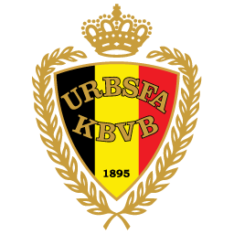
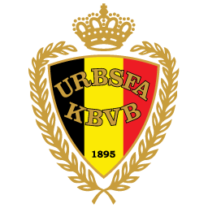
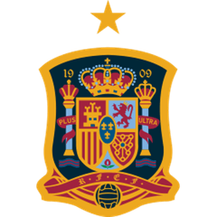
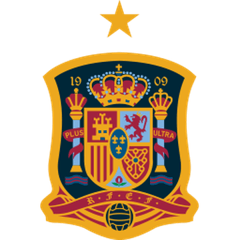

1st annual World Cup
Michael came into the tournament on a 2 game win streak. He was also on a 2 game win streak over his first round match-up, Joe.
He ended up losing what would be a near record braking offensive performance, including 16 shots and 8 on goal. Unfortunately, these efforts led to no goals and a defeat to Joe.
Despite his best effort in his second game, he fell to Karsin after only producing a single shot on goal.
 


 
